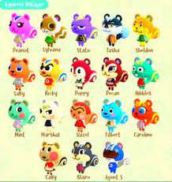
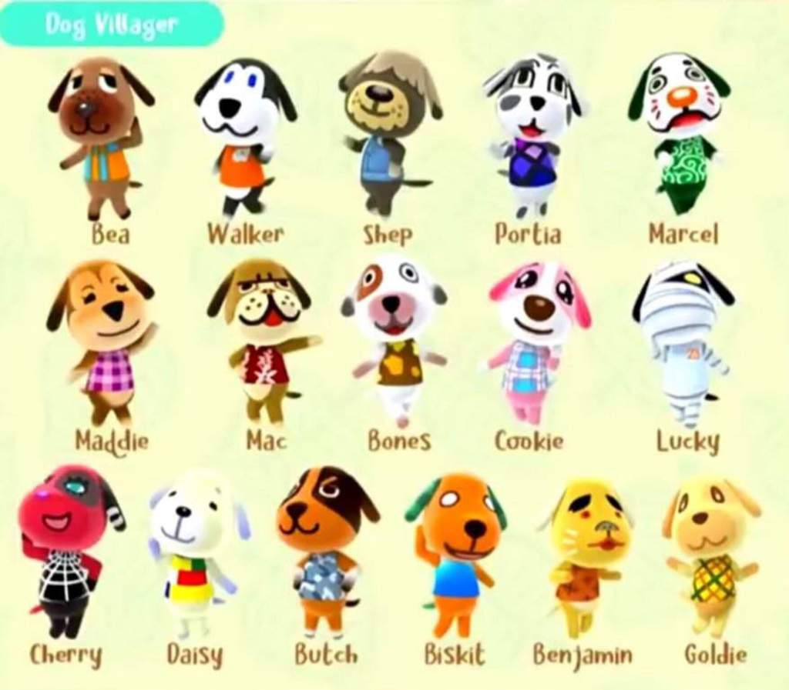
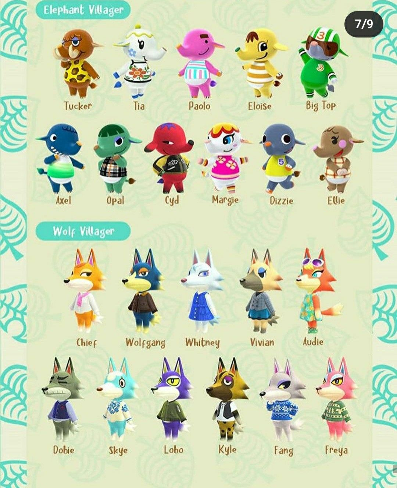
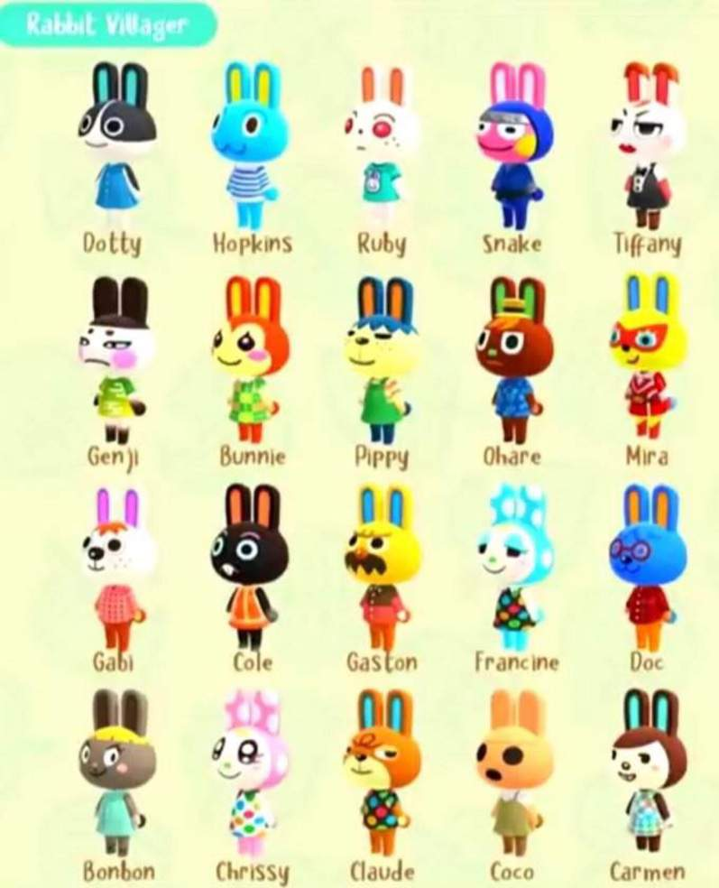
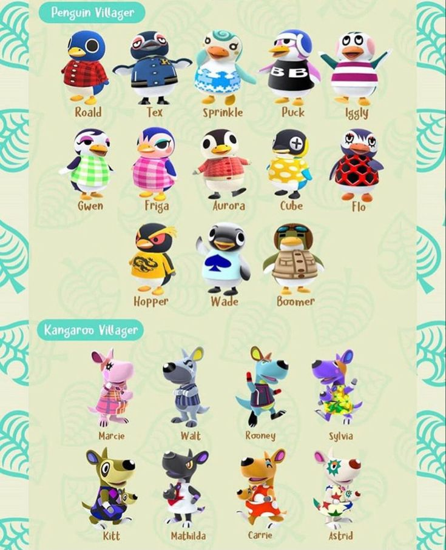
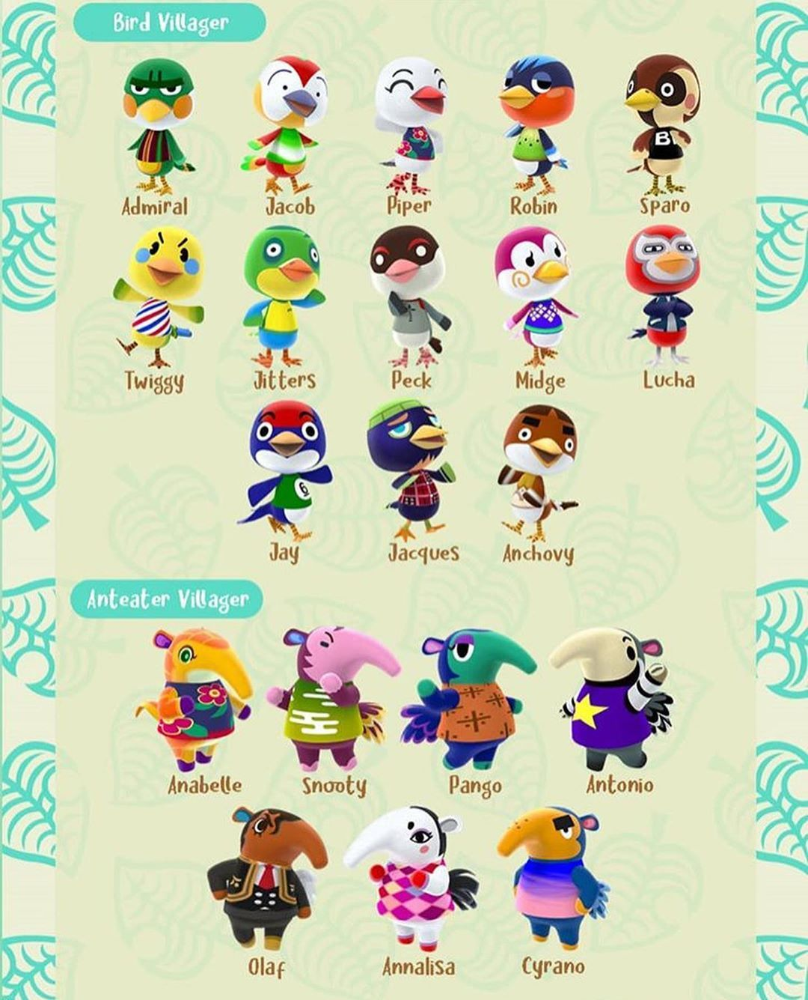
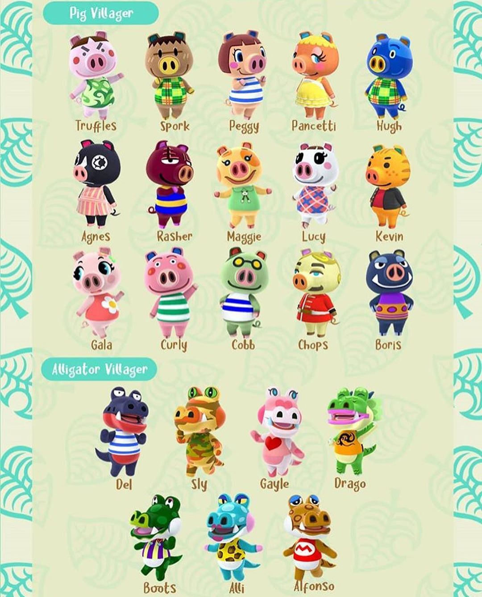
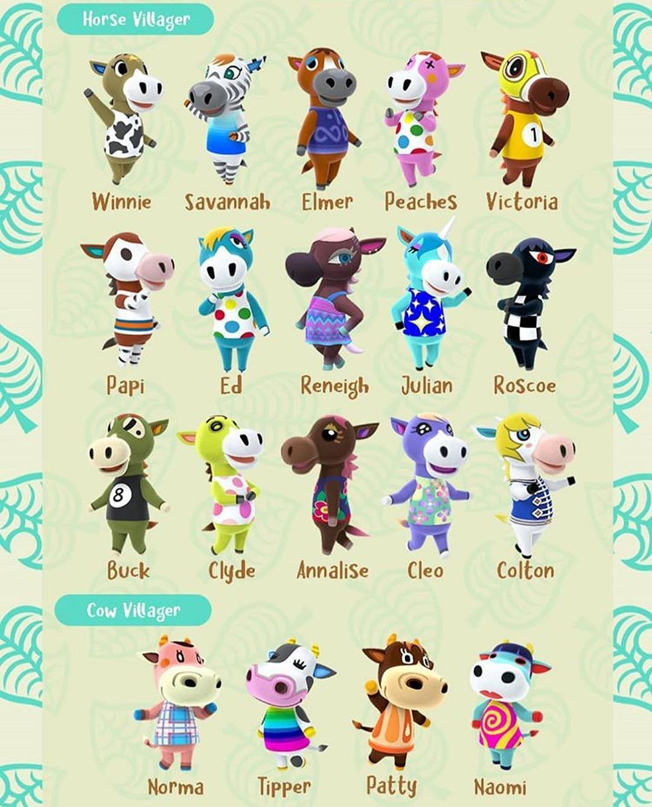

Ardillas
La ardillas són un tipo de animales que existen en Animal Crossing, se caracterizan por ser pequeños, redondos y con personaidades y aspectos diferentes. Perros
Los perros tambíen se tratan de otra especie de animales que existen en el mundo de Animal Crossing, también con personalidades y aspectos diferentes. Rana
Las ranas són otras de las especies que hay en animal crossing, estas se tratan de ranas las cuales se caracterizan también por ser pequeñas. Conejos
Los conejos son otros animales que destacan por sus orejas representativas de conejo, ademásde su esponjosa cola.
Pingüinos y Canguros
Los pingüinos destacan por su apariencia tan adorable, bajitos y rechonchetes con colores preciosos. Mientras que los canguros destacan sobre todo por la bolsa en la que treansportan a sus "hijos" con ellos.
Pájaros y Osos hormigueros
Los pájaros destacan por sus picos y alas, cuentan con colores llamativos y guays. Sin emargo los osos hormigueros cuentan con su largo hocico y el característico cuerpo de esto.
Águilas y Tigres
Los pájaros destacan por sus picos y alas, cuentan con colores llamativos y guays. Sin emargo los osos hormigueros cuentan con su largo hocico y el característico cuerpo de esto.
Pájaros y Osos hormigueros
Los pájaros destacan por sus picos y alas, cuentan con colores llamativos y guays. Sin emargo los osos hormigueros cuentan con su largo hocico y el característico cuerpo de esto.
Pájaros y Osos hormigueros
Los pájaros destacan por sus picos y alas, cuentan con colores llamativos y guays. Sin emargo los osos hormigueros cuentan con su largo hocico y el característico cuerpo de esto.